There are many non-classical variations of modal logic. I want to talk about the two major variations \(\mathsf{CK}\) and \(\mathsf{IK}\) of the modal logic \(\mathsf{K}\). Recently, Anupam Das and Sonia Marin proved that these logics do not prove the same \(\Diamond\)-free formulas; and not so recently Grefe proved the same in their PhD thesis. This result was not common knowledge, and commonly assumed false. Das and Marin's proof is syntactical; here I give a simple semantical proof that \(\mathsf{IK} \models \neg\neg\Box\bot\to\Box\bot\) but \(\mathsf{CK} \not \models \neg\neg\Box\bot\to\Box\bot\).
For much more on the logics between \(\mathsf{CK}\) and \(\mathsf{IK}\), see Das and Marin's "On Intuitionistic Diamonds (and Lack Thereof)" and de Groot, Shillito, and Clouston's "Semantical Analysis of Intuitionistic Modal Logics between \(\mathsf{CK}\) and \(\mathsf{IK}\)". I also wrote about cases where the \(\mathsf{C}\) and \(\mathsf{I}\) versions of modal logics coincide in "Collapsing Constructive and Intuitionistic Modal Logics".
These definitions are standard in intuitionistic modal logic; for more detailed explanations, see the papers cited in the introduction.
\(\mathsf{CK}\) is the logic with axioms are intuitionistic tautologies, \(K_\Box := \Box(\varphi\to\psi) \to (\Box\varphi \to \Box \psi)\), and \(K_\Diamond := \Box(\varphi\to\psi) \to (\Diamond\varphi \to \Diamond \psi)\); it is closed under the rules \[ (\mathbf{Nec}) \; \frac{\varphi}{\Box\varphi} \;\;\;\;\;\text{ and }\;\;\;\;\; (\mathbf{MP}) \; \frac{\varphi \;\;\; \varphi\to\psi}{\psi}. \] \(\mathsf{IK}\) is obtained by adding to \(\mathsf{CK}\) the axioms \(FS := (\Diamond \varphi \to \Box\psi) \to \Box(\varphi\to\psi)\), \(DP := \Diamond (\varphi\lor\psi) \to \Diamond\varphi\lor\Diamond\psi\), and \(N := \neg \Diamond \bot\). These axioms all talk about diamonds, and none is purely about boxes.
The Kripke semantics for these logics combine the Kripke semantics of intuitionistic and modal logics. More precisely, a \(\mathsf{CK}\)-model is a tuple \(M=\langle W, W^\bot ,\preceq, R, V \rangle\) where:
As in intuitionistic logic, we require that, if \(w \preceq v\) and \(w\in V(P)\), then \(v\in V(P)\). To guarantee the worlds in \(W^\bot\) behave as we want, we require that, for all \(P\in\mathrm{Prop}\), \(W^\bot\subseteq V(P)\); and, if \(w\in W^\bot\) and either \(w\preceq v\) or \(w R v\), then \(v\in W^\bot\).
An \(\mathsf{IK}\)-model is a \(\mathsf{CK}\)-model where \(W^\bot\) is empty and satisfies the following properties:
These are necessary to make the extra axioms \(FS\), \(DP\), and \(N\) be sound.
The valuation of formulas is quite standard, we present only the cases where it differs from classical modal logics:
We can now state: \(\mathsf{CK}\) and \(\mathsf{IK}\) are complete with respect to their semantics.
At the world \(w_0\) in the following \(\mathsf{CK}\)-model, the formula \(\neg\neg\Box\bot\to\Box\bot\) does not hold:
Fix an \(\mathsf{IK}\)-model \(M\) and a world \(w\). Suppose \(w\) does not satisfy \(\Box\bot\), then there are worlds \(v_1\) and \(v_2\) such that \(w \preceq v_1\) and \(v_1 R v_2\). If \(w\) satisfies \(\neg\neg\Box\bot\), there is \(u_1\) such that \(v_1\preceq u_1\) and \(u_1\) satisfies \(\Box\bot\). Now, by the relation between \(R\) and \(\preceq\), there is \(u_2\) such that \(u_1 R u_2\) and \(v_2 \preceq u_2\). In particular, we have \(u_2\models\bot\); this is impossible in \(\mathsf{IK}\)-models. So if \(w\) satisfies \(\neg\neg\Box\bot\) then \(w\) satisfies \(\Box\bot\) too.
Here is the TikZ code for the figures in this post. Feel free to use them as you want.
\tikzstyle{world}=[circle,draw,minimum size=5mm,inner sep=0pt]
\begin{tikzpicture}
\node (w) at (0,-2) {$w_0$};
\node (w2) at (2,-2) {$w_1$};
\node (v) at (0,0) {$w_2$};
\draw[->] (w) -- (w2) node[midway,below] {$R$};
\draw[->] (w) -- (v) node[midway,left] {$\preceq$};
\end{tikzpicture}\tikzstyle{world}=[circle,draw,minimum size=5mm,inner sep=0pt]
\begin{tikzpicture}
\node (w) at (0,-4) {$w$};
\node (v1) at (0,-2) {$v_1$};
\node (v2) at (2,-2) {$v_2$};
\draw[->] (w) -- (v1) node[midway,left] {\(\preceq\)};
\draw[->] (v1) -- (v2) node[midway,above] {\(R\)};
\node (u1) at (0,0) {$u_1$};
\draw[->] (v1) -- (u1) node[midway,left] {\(\preceq\)};
\node (u2) at (2,0) {$u_2$};
\draw[->,dashed] (u1) -- (u2) node[midway,above] {\(R\)};
\draw[->,dashed] (v2) -- (u2) node[midway,right] {\(\preceq\)};
\end{tikzpicture}